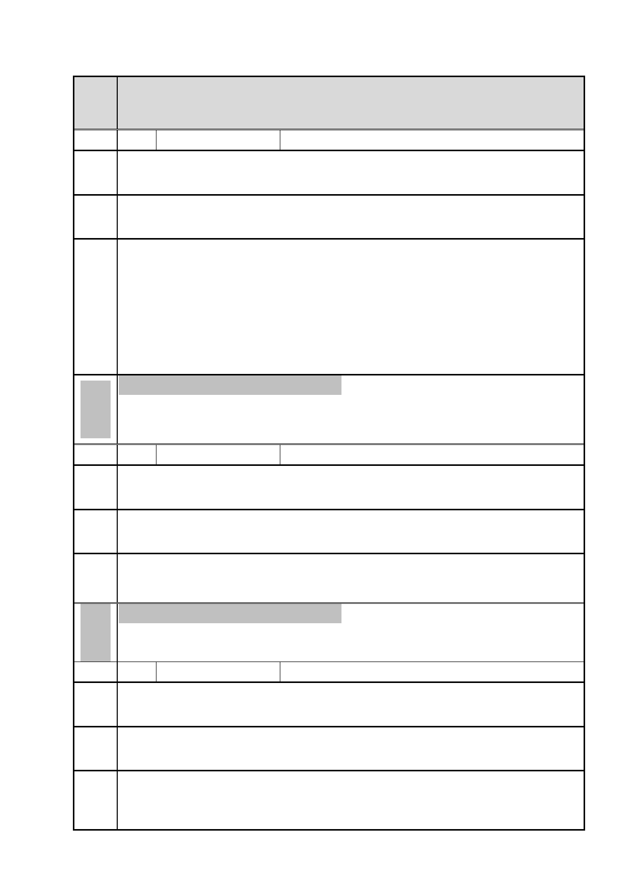

臺北市都市計畫委員會 公民或團體陳情意見綜理表
案名 擬定臺北市南港區玉成段二小段 166 地號等 5 筆土地(編號 BR-2 國產實
業)細部計畫案
編號 1 陳情人
周○維
陳情
理由
建議 請求於一年內完成國產遷廠，公園馬路期盼拓寬 20 米，儘速開闢。
辦法
1.本案基地南側昆陽街 60 巷，現配合 101 年 5 月 15 日公告之「擬定臺
北市南港區鐵路地下化沿線土地細部計畫案」辦理市地重劃作業中，
回應
內容
未來將依計畫開闢為 15 公尺寬。另基地西側南港路三段 47 巷未來將
依南港區通盤檢討計畫案規定，於更新改建過程將 10 公尺寬計畫道路
擴寬為 15 公尺。另因交通需求仍須考量道路系統性容量，尚非局部拓
寬可解決，故依現行方案將計畫道路拓寬為 15 公尺已為妥適尺寸。
2.至有關國產實業遷廠事宜，將配合後續作業期程辦理。
委員 依市府及申請單位回應內容辦理。
會議
決議
編號 2 陳情人
林○祥
陳情 試問 BR3 瓏山林建設若無整體區塊開發，獨留 BR3 零星殘破不堪醜陋
理由 建築，未來大南港之新東區願景市容必有妨礙。
建議 應整體納入整體開發。
辦法
回應 查陳情所指 BR-3 基地非屬本案範圍，建議於該基地申請變更計畫案時
內容 再提出陳情意見。
委員 依市府及申請單位回應內容辦理。
會議
決議
編號 3 陳情人
呂○法
陳情
理由
建議 未來商業區人車增加，請求南港路三段 47 巷直通市民大道全面改為 20
辦法 米馬路，以符商業區大量需求。
回應
內容
本案基地南側昆陽街 60 巷，現配合 101 年 5 月 15 日公告之「擬定臺北
市南港區鐵路地下化沿線土地細部計畫案」辦理市地重劃作業中，未來
將依計畫開闢為 15 公尺寬。另基地西側南港路三段 47 巷未來將依南港
-8-